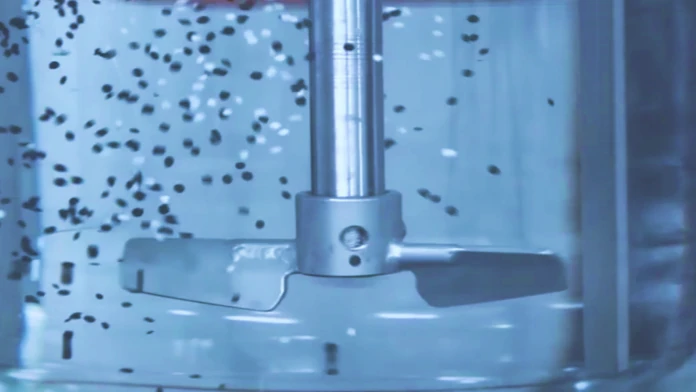

Fundamentos de agitación
Patrones de flujo, impulsores, bafles y geometría del tanque; potencia, tiempo de mezcla y escalado; y qué hacer con un sólido, según se hunda o flote.
Esta lectura cubre los fundamentos de la agitación, una de las operaciones unitarias más extendidas en las industrias cosmética, farmacéutica, de alimentos, química y de bioprocesos. Es la base para que el resto del proceso (transferencia de masa, calor, reacción) ocurra de forma eficiente y reproducible. Veremos los patrones de flujo, los tipos de impulsores, los bafles, los números adimensionales que gobiernan la potencia, el tiempo de mezcla, el trabajo con sólidos que se hunden o flotan y los criterios de escalado. La Lectura 09 continúa con el mezclado, la transferencia de calor en el tanque y el escalado del mezclado.
- Distinguir agitación de mezclado y reconocer para qué se agita un tanque
- Seleccionar un impulsor según el régimen, la viscosidad y el objetivo, y decidir si el tanque lleva bafles
- Calcular el Reynolds de agitación, leer el número de potencia y obtener la potencia al fluido y la del motor
- Estimar el tiempo de mezcla en régimen turbulento con la correlación de Grenville
- Calcular la velocidad de suspensión completa con la correlación de Zwietering y reconocer cuándo no aplica
- Plantear el diseño de un tanque que debe incorporar sólidos que flotan: velocidad de arrastre, potencia y tiempo de mezcla
- Elegir un criterio de escalado según el fenómeno que controla el proceso

Para cada tanque agitado de su proyecto (mezcla, reacción, suspensión, dispersión, enfriamiento), usted debe:
- Definir claramente el objetivo de la agitación (homogeneizar, suspender, dispersar gas, transferir calor, etc.).
- Seleccionar un tipo de impulsor apropiado y justificarlo.
- Estimar las dimensiones del tanque y del impulsor con relaciones geométricas estándar.
- Calcular el Re_ag a las condiciones de operación.
- Determinar el N_P usando la curva N_P vs Re_ag.
- Calcular la potencia requerida y la potencia del motor (con eficiencia y factor de servicio).
- Decidir si lleva bafles.
- Estimar el tiempo de mezcla y compararlo con el tiempo que el líquido pasa en el tanque.
- Si hay un sólido, saber si se hunde o flota: eso decide si aplica la correlación de Zwietering o si el tanque se dimensiona por potencia y tiempo de mezcla (sección 7).
- Si parten de un diseño de laboratorio, discutir qué criterio de escalado aplicaría a su proceso.
1. Agitación y mezclado
Es importante diferenciar dos términos relacionados pero distintos:
- Agitación: movimiento inducido en un material, típicamente un fluido o mezcla de fluidos, dentro de un recipiente, para crear un patrón de flujo específico.
- Mezclado: proceso que busca una distribución aleatoria y uniforme de dos o más componentes o fases inicialmente separadas, hasta alcanzar un grado deseado de homogeneidad.
La agitación es a menudo el medio para lograr el mezclado, pero se puede agitar sin mezclar (mantener agua en movimiento) y se puede mezclar sin un patrón de agitación clásico (mezcla por impacto en líneas).
Para qué se agita
- Suspender partículas sólidas.
- Dispersar un gas en un líquido (burbujeo, fermentación).
- Promover transferencia de calor (paredes encamisadas, serpentines).
- Mantener homogeneidad o evitar sedimentación.
- Aumentar la velocidad de reacciones químicas (reduciendo resistencia a la transferencia de masa).
- Formar y estabilizar emulsiones (cremas, lociones), suspensiones (maquillajes), incorporar activos.
En una extracción sólido-líquido por lotes, como la de un colorante natural desde flores secas o la de los solubles de una hoja, la agitación define la eficiencia de la extracción. El contacto entre el solvente y el sólido triturado determina cuánto soluto se libera; la circulación decide si la temperatura es uniforme en el tanque y si el material sedimenta o queda en suspensión. Una misma receta con dos agitaciones distintas puede dar rendimientos muy diferentes.
2. Patrones de flujo
El impulsor (o agitador) es el corazón del sistema. Al rotar imparte energía al fluido y genera un patrón de flujo característico. Los dos patrones primarios son:

Flujo axial: el fluido se desplaza paralelo al eje del agitador (hacia abajo o arriba), choca contra el fondo o la superficie y vuelve a las paredes para recircular. Buen bombeo, bajo cizallamiento.

Flujo radial: el fluido sale perpendicular al eje hacia las paredes, donde se divide en corrientes ascendente y descendente. Crea zonas de alta turbulencia y cizalladura cerca del impulsor.
Algunos impulsores combinan ambos comportamientos en proporciones variables (las turbinas de palas inclinadas son el ejemplo clásico), y los agitadores para fluidos viscosos, como anclas o cintas helicoidales, no se ajustan al esquema axial/radial sino que tienen patrones cercanos a la pared o flujos forzados muy controlados.
3. Tipos de impulsores
La selección del impulsor depende del régimen (laminar, transicional, turbulento), la viscosidad, el tipo de mezcla deseada (gas-líquido, líquido-líquido, sólido-líquido), y las restricciones del proceso (cizallamiento permitido, sensibilidad biológica, etc.). Estos son los más comunes:
Explore cada tipo en el visor interactivo:
Cómo elegir
Tabla 1. Guía de selección rápida de impulsores según el objetivo del proceso.
| Si necesita… | Impulsor recomendado |
|---|---|
| Mezcla rápida de líquidos miscibles, μ baja | Hélice marina o PBT 45° |
| Suspensión de sólidos finos | Hélice o PBT (axial) |
| Incorporar sólidos que flotan | Axial (PBT o hidrofoil) cerca de la superficie; vea la sección 7 |
| Dispersión de gas (fermentación, oxigenación) | Turbina Rushton (o Smith curva) |
| Emulsiones (alto cizallamiento puntual) | Rushton + alta velocidad / molinos coloidales en línea |
| Fluidos viscosos (μ > 1000 cP) | Cinta helicoidal o ancla |
| Transferencia de calor con paredes | Ancla o cinta helicoidal |
4. Bafles (deflectores)
Los bafles son placas verticales montadas en las paredes internas del tanque. Su función es romper el remolino (movimiento de masa rotacional) que produce el impulsor en líquidos poco o medianamente viscosos, convirtiendo la rotación en patrones axiales y radiales más efectivos.
Comparación experimental del flujo en un tanque sin bafles (vórtice profundo) y con bafles (superficie plana, mezcla efectiva).
Beneficios
- Convierten el movimiento rotacional en flujo axial/radial efectivo.
- Aumentan la turbulencia.
- Evitan la incorporación no deseada de gas desde el espacio superior (vórtice profundo).
- Estandarizan el comportamiento (los N_P tabulados asumen tanque con bafles).
Diseño típico
- Cuatro bafles distribuidos a 90° alrededor del tanque.
- Ancho W_b ≈ D_t / 12 (a veces hasta D_t/10).
- Separados ligeramente de la pared (pequeño gap) para evitar zonas muertas.
- Que cubran al menos la zona del impulsor en altura.
- En líquidos muy viscosos: el fluido mismo resiste el remolino y los bafles son innecesarios o crean zonas muertas.
- Con agitadores excéntricos o angulares: el desbalance ya rompe el patrón rotacional.
- En tanques muy pequeños donde el bafle ocupa una fracción importante del diámetro.
Con sólidos que flotan la pregunta cambia. Un vórtice profundo no los hunde: los mantiene girando cerca de la superficie. Lo que los arrastra es la turbulencia y el flujo que llegan a la superficie, y por eso en esos tanques se estudian bafles parciales o bafles que solo ocupan la parte alta (sección 7).
5. Geometría estándar de un tanque agitado
Para que las correlaciones sean válidas, y sobre todo los criterios de escalado, se trabaja con tanques que cumplen similitud geométrica. Las relaciones típicas (configuración estándar) son:

Tabla 2. Relaciones geométricas estándar de un tanque agitado.
| Relación | Valor estándar | Comentario |
|---|---|---|
| D_a / D_t | 1/3 | Diámetro de impulsor un tercio del tanque. |
| H / D_t | 1 | Altura de líquido igual al diámetro. |
| E / D_t | 1/3 | Altura del impulsor sobre el fondo. |
| W_b / D_t | 1/12 | Ancho de bafle. |
| L / D_a | 1/4 | Longitud de pala (en turbinas con disco). |
| W / D_a | 1/5 | Ancho de pala. |
Cuando un proceso requiere algo distinto (tanques alargados, impulsores múltiples, etc.) hay que tener especial cuidado al usar correlaciones tabuladas: la geometría deja de ser similar y los N_P publicados pueden no aplicar.
6. Potencia y números adimensionales
Estimar la potencia consumida por el agitador es fundamental para dimensionar el motor y evaluar el costo operativo. Se usan dos números adimensionales clave.
Número de Reynolds de agitación
Caracteriza el régimen de flujo en el tanque:
- D_a: diámetro del impulsor (m).
- N: velocidad de rotación (rev/s: atención a las unidades).
- ρ: densidad del fluido (kg/m³).
- μ: viscosidad dinámica (Pa·s).
- Laminar: Re_ag ≲ 10.
- Transicional: 10 ≲ Re_ag ≲ 10^4.
- Turbulento: Re_ag ≳ 10^4.
Es la pista número uno para la mayoría de cálculos: marca dónde leer la curva N_P, si los bafles son útiles, y qué correlaciones aplican.
Número de Froude de agitación
Compara las fuerzas de inercia con las gravitacionales y caracteriza la formación del vórtice (deformación de la superficie libre):
- N: velocidad de rotación (rev/s).
- D_a: diámetro del impulsor (m).
- g: aceleración de la gravedad (9,81 m/s²).
El número de Froude solo es relevante en tanques sin bafles, donde el vórtice deforma la superficie y la gravedad pasa a influir en la potencia. En esos casos el número de potencia se corrige con un factor de Froude:
donde a y b son constantes empíricas de cada geometría. En tanques con bafles el vórtice se suprime, Fr_ag deja de influir (n = 0) y el número de potencia depende únicamente de Re_ag y de la geometría, que es el caso de las curvas N_P vs Re_ag tabuladas.
Número de potencia
Relaciona la potencia consumida con las propiedades del fluido y la geometría:
- P: potencia consumida por el agitador (W).
- N_P depende de la geometría (tipo de impulsor, D_a/D_t, presencia de bafles…) y de Re_ag.
Para un sistema geométricamente similar se obtienen curvas log-log de N_P vs Re_ag con dos comportamientos asintóticos:
- En régimen laminar (Re_ag < 10): N_P · Re_ag = K_l (constante), por lo que N_P ∝ 1/Re_ag.
- En régimen turbulento con bafles (Re_ag > 10^4): N_P tiende a un valor constante K_t característico de cada impulsor.
- Entre ambos hay una zona transicional donde N_P depende suavemente de Re_ag.
Curva N_P vs Re_ag: log-log
Re_ag: 10k ·Las curvas anteriores son un modelo simplificado. Las curvas reales de fabricantes y libros de texto se ven así:

Hélice y cinta helicoidal: efecto del bafle en la transición turbulenta.

Comparación: cinco geometrías de impulsor: turbinas de disco, CD-6, pala inclinada, A310 y HE-3.
Cálculo de la potencia
Conocido N_P (de la curva o correlación), se despeja la potencia entregada al fluido:
La potencia del motor debe ser mayor que P para cubrir las pérdidas mecánicas en transmisión y motor: típicamente se divide entre η_motor ≈ 0,85-0,95 y se aplica un factor de servicio de 1,15-1,25.
Calculadora de potencia de agitación
Tanque con turbina Rushton (N_P ≈ 5,75) en régimen turbulento, D_a = 0,5 m, N = 120 rpm = 2 rev/s, ρ = 1000 kg/m³:
- P = 5,75 · 1000 · 2^3 · 0,5^5 = 5,75 · 1000 · 8 · 0,03125 ≈ 1438 W.
- Con η_motor = 0,9: P_motor ≈ 1,60 kW.
- Aplicando f_s = 1,2: motor comercial de ≈ 2,2 kW (3 HP).
Tiempo de mezcla
El tiempo de mezcla t_mix (o tiempo de mezclado) es el intervalo necesario para alcanzar un grado de homogeneidad prefijado (típicamente 95 % o 99 %) tras introducir un trazador. Es la medida directa de la rapidez con que el agitador homogeneiza el contenido del tanque, y depende del caudal de circulación que genera el impulsor.
Se adimensionaliza como el número de mezcla (mixing time number), que en régimen turbulento con bafles es constante para una geometría dada:
Esto significa que, en régimen turbulento, el tiempo de mezcla es inversamente proporcional a la velocidad de giro (t_mix ∝ 1/N): duplicar las revoluciones reduce el tiempo de mezcla a la mitad. El producto N · t_mix vale del orden de 25-45 para turbinas con Da/Dt = 1/3 en tanques con H ≈ D_t, y más para impulsores de bajo N_P; la correlación de Grenville, más abajo, lo calcula para cada uno. En régimen laminar N · t_mix deja de ser constante y crece fuertemente al disminuir Re_ag, porque la mezcla deja de apoyarse en la turbulencia y depende del barrido convectivo del impulsor.
El tiempo de circulación t_c es el tiempo medio que tarda un elemento de fluido en recorrer un lazo completo del tanque. El tiempo de mezcla equivale a varios tiempos de circulación (típicamente t_mix ≈ 4-5 t_c), porque homogeneizar exige varias pasadas por la zona de alta turbulencia del impulsor.
Cuánto vale el tiempo de mezcla: la correlación de Grenville
Para tanques con bafles en régimen turbulento, la correlación más usada es la de Grenville, que reúne medidas con trazador de muchos impulsores y define el tiempo de mezcla al 95 % (θ95: todas las sondas quedan a ±5 % del valor final):
Vale con la dispersión de ±10 % de los datos, en régimen turbulento (para Re_ag por encima de unos 6400·Np^(−1/3)) y con H/Dt ≤ 1, que es donde se midió; en tanques más altos la correlación subestima el tiempo (Grenville y Nienow, 2004). Dos lecturas de la ecuación:
- Con la geometría fija, Nθ95 es una constante del tanque: duplicar N divide el tiempo de mezcla entre dos y multiplica la potencia por ocho.
- Como P/V ∝ Np N³ Da⁵/Dt³, a igual potencia por unidad de volumen y el mismo Da/Dt todos los impulsores dan casi el mismo θ95. Lo que acorta el tiempo de mezcla a igual gasto es un impulsor más grande, no uno de otro tipo.
Rushton (Np = 5,75) de Da = 0,5 m en un tanque de Dt = H = 1,5 m con agua a 20 °C, a 2 rev/s. El Reynolds es 5×10⁵: turbulento.
- Nθ95 = 26,1 vueltas.
- θ95 ≈ 13 s.
- Con una PBT del mismo diámetro (Np = 1,27) a la misma velocidad, Nθ95 = 43,2 y θ95 ≈ 22 s, con una potencia 4,5 veces menor.
Un tiempo de mezcla de segundos frente a un tiempo de residencia de minutos dice que el tanque se comporta como bien mezclado. Si los dos son del mismo orden, la agitación limita el proceso.
7. Suspender lo que se hunde, incorporar lo que flota
Muchos tanques agitados trabajan con un sólido: un catalizador en polvo, un mineral que se lixivia, cristales que crecen, fibras que se lavan, pellets que hay que mojar. Antes de calcular, pregúntese qué hace el sólido cuando el agitador está quieto. Si se va al fondo, el problema es levantarlo. Si flota, o tiene casi la misma densidad del líquido, el problema es otro: arrastrarlo desde la superficie y mojarlo. Las herramientas de cálculo de un caso no sirven para el otro, y confundirlas es un error frecuente.

Tres grados de suspensión
Con un sólido que se hunde, al subir la velocidad del agitador se pasa por tres estados:
- Suspensión incompleta: parte del sólido reposa en el fondo. Esa fracción casi no intercambia masa ni calor con el líquido.
- Suspensión completa (just suspended): ninguna partícula permanece quieta en el fondo más de 1-2 s. La velocidad a la que se llega a este estado es Njs, y es el criterio de diseño usual cuando lo que se busca es que todo el sólido esté en contacto con el líquido, por ejemplo para disolverlo o hacerlo reaccionar.
- Suspensión homogénea: la concentración de sólidos es la misma en todo el tanque. Exige bastante más velocidad que Njs y se justifica cuando el tanque alimenta a otro equipo y la corriente de salida debe llevar la concentración del lote.
La transferencia de masa entre el sólido y el líquido crece rápido mientras la velocidad se acerca a Njs, porque cada vez hay más superficie expuesta, y despacio después. Pasar de Njs multiplica la potencia por (N/Njs)³ a cambio de poco. Por eso el diseño suele fijar la velocidad con un margen pequeño sobre Njs.
Sólidos que se hunden: la correlación de Zwietering
Zwietering (1958) midió Njs para muchas combinaciones de sólido, líquido, impulsor y tanque, y las reunió en una correlación que sigue siendo la referencia de diseño:
- Njs: velocidad de suspensión completa (rev/s).
- S: constante adimensional que depende del tipo de impulsor, de Dt/Da y de la altura del impulsor sobre el fondo. McCabe la tabula (tabla 9.4); para una turbina de seis palas a E = Dt/4, S vale 4,1, 7,5 y 11,5 para Dt/Da de 2, 3 y 4.
- ν = μ/ρL: viscosidad cinemática del líquido (m²/s).
- dp: diámetro de partícula (m); Δρ = ρs − ρL (kg/m³).
- X: 100 × masa de sólido / masa de líquido. No es la fracción másica de la suspensión: con 12 % en peso de sólidos, X = 13,6.
- Da: diámetro del impulsor (m).
Los exponentes dicen qué manda. La diferencia de densidades (0,45) y el diámetro del impulsor (−0,85) pesan mucho; la carga de sólidos (0,13) y la viscosidad (0,1) casi nada. Un impulsor más grande suspende a menos revoluciones. La potencia se calcula con P = Np·ρm·Njs³·Da⁵, donde la densidad es la de la suspensión, 1/ρm = w/ρs + (1 − w)/ρL, con w la fracción másica de sólidos.
Partículas de catalizador de 150 µm (ρs = 2400 kg/m³), 8 % en peso, en agua a 25 °C (ρL = 997 kg/m³, μ = 0,89 mPa·s). Tanque de Dt = H = 1,5 m (2,65 m³) con bafles y una turbina de seis palas de Da = 0,5 m a E = Dt/4, así que S = 7,5.
- X = 8,70.
- Njs = 2,49 rev/s, unos 149 rpm.
- Re ≈ 7×10⁵: turbulento, Np = 5,75.
- ρm = 1046 kg/m³ y P ≈ 2,9 kW, es decir, 1,1 kW/m³.
Un impulsor axial del mismo diámetro suspendería con bastante menos potencia: su Np es varias veces menor y su S parecido o menor, porque dirige el flujo hacia el fondo. El Taller 5 hace esa comparación.
Calculadora de suspensión completa (Zwietering)
Cuando la correlación de Zwietering no sirve
La correlación supone un sólido que sedimenta y fue ajustada con sólidos claramente más densos que el líquido. Si ρs se acerca a ρL, Δρ → 0 y la fórmula predice que basta con girar muy despacio. La Tabla 4 lo muestra con el ejemplo anterior, cambiando solo la densidad del sólido.
Tabla 4. Njs de Zwietering para el tanque del ejemplo al acercar la densidad del sólido a la del agua.
| ρs (kg/m³) | Δρ (kg/m³) | Njs (rpm) | Lectura |
|---|---|---|---|
| 2400 | 1403 | 149 | Dentro del dominio de la correlación. |
| 1100 | 103 | 46 | Extrapolación: el número ya es dudoso. |
| 1050 | 53 | 34 | El sólido casi sigue al líquido; el problema ya no es el fondo. |
| 1010 | 13 | 18 | Sin sentido físico como velocidad de diseño. |
| 950 | −47 | no existe | El sólido flota: gΔρ/ρL < 0. |
Esos números bajos no quieren decir que el tanque quede bien a 20 rpm. Dicen que el sólido ya no se va al fondo. Puede quedarse en la superficie, aglomerarse o no mojarse, y nada de eso lo ve la correlación. Si el sólido flota, el término gΔρ/ρL es negativo y la correlación ya no tiene sentido.
Sólidos que flotan: arrastrarlos hacia abajo
Un sólido más liviano que el líquido (pellets de polietileno en agua, polvos que atrapan aire, fibras secas, virutas o cáscaras vegetales) se queda arriba hasta que el flujo lo lleva al seno del líquido. La velocidad mínima a la que ya no quedan sólidos detenidos en la superficie se llama velocidad de arrastre o de incorporación completa, Njd (just drawn down). Es el equivalente de Njs, pero la física es otra.
Para que una partícula baje, el líquido que pasa por la superficie tiene que descender más rápido de lo que ella sube. La velocidad de ascenso se estima como la de sedimentación, con Δρ negativo; para partículas pequeñas, con la ley de Stokes, vt = g·|Δρ|·dp²/(18μ). Con densidades cercanas esa velocidad es mínima: una partícula de 0,2 mm con 10 kg/m³ menos que el agua sube a unos 0,2 mm/s, y una vez mojada y sumergida sigue al líquido. La resistencia está en la superficie. El sólido seco atrapa aire, la tensión superficial lo sostiene y los flotantes se juntan en una capa que gira como una balsa.
En tanques con bafles se han identificado dos mecanismos de arrastre: el arrastre medio, cuando la circulación pasa por la superficie con velocidad hacia abajo, y el engullimiento turbulento, cuando los remolinos cerca de la superficie atrapan partículas y las hunden. Un vórtice grande, en cambio, retiene las partículas girando cerca de la superficie, y por eso se recomienda suprimirlo (Khazam y Kresta, 2009; Vondál et al., 2015).
Qué controla la velocidad de arrastre
- La sumergencia del impulsor, es decir, su distancia a la superficie. Junto con el sentido de bombeo, es lo que más pesa: con el impulsor cerca de la superficie, el flujo y la turbulencia llegan donde está el sólido (Khazam y Kresta, 2009).
- El sentido de bombeo. Un impulsor axial que bombea hacia arriba, cerca de la superficie, logró el arrastre con menos potencia que uno que bombea hacia abajo desde cerca del fondo. Este último, en cambio, reparte mejor lo que ya se hundió (Özcan-Taşkın, 2006; Svačina, 2013, citado por Vondál et al., 2015).
- El tipo de impulsor. Un hidrofoil axial de aspas angostas gastó menos potencia que una turbina de palas inclinadas para el mismo arrastre (Özcan-Taşkın, 2006).
- Los bafles. Los bafles completos suprimen el vórtice y aumentan la turbulencia en la superficie, pero también crean una circulación del fondo hacia arriba que devuelve las partículas a la superficie. Unos bafles que solo ocupan la parte alta del tanque redujeron la velocidad de arrastre frente a los bafles completos, fueron menos sensibles a la sumergencia y repartieron mejor los sólidos (Khazam y Kresta, 2009).
- La carga de sólidos. Njd crece con la concentración de flotantes; en un estudio de escalado creció de forma lineal (Svačina, 2013, citado por Vondál et al., 2015).
- La mojabilidad. Un polvo hidrofóbico o con aire atrapado exige más. A veces se resuelve en la alimentación (rociar líquido sobre el sólido, alimentarlo por debajo de la superficie, dosificarlo despacio) y no con más revoluciones.
Cómo se dimensiona sin una correlación: potencia y tiempo de mezcla
Para Njd no hay una correlación general comparable a la de Zwietering: las publicadas valen para la geometría en que se midieron. El diseño se apoya en un ensayo y en dos números que sí se calculan bien, la potencia por unidad de volumen y el tiempo de mezcla:
- Ensayo en un tanque de laboratorio geométricamente similar, con el sólido y el líquido reales. Se sube la velocidad hasta que no quedan sólidos detenidos en la superficie y se calcula P/V a esa velocidad.
- Escalado por P/V constante, el criterio que mejor representó el arrastre con impulsores axiales cerca de la superficie (Özcan-Taşkın, 2006; Svačina, 2013, citado por Vondál et al., 2015), con un margen sobre la velocidad de arrastre.
- Tiempo de mezcla con Grenville a la velocidad de operación: el contenido debe homogeneizarse en un tiempo pequeño frente al tiempo de residencia (si el tanque es continuo) o frente al tiempo de lote.
- Potencia del motor con su eficiencia y el factor de servicio.
- Velocidad de punta, si el sólido es frágil o se desmenuza.
La tasa de incorporación se ha correlacionado con la velocidad media del líquido en la superficie libre, una variable que se puede calcular con simulación de fluidos para cualquier impulsor y tanque (Waghmare et al., 2011, citado por Vondál et al., 2015). Es la vía cuando el ensayo no se puede hacer a escala.
Pellets de polietileno (ρs ≈ 950 kg/m³) que deben mojarse en una solución acuosa. En un tanque de laboratorio de Dt = H = 0,30 m (21 L), con una PBT de cuatro palas a 45° de Da = 0,10 m (Np = 1,27) que bombea hacia abajo cerca de la superficie, supongamos que el ensayo da Njd = 420 rpm. Ese valor es inventado para el ejemplo: en un diseño real sale del ensayo.
- Laboratorio: Re = 7×10⁴, turbulento; P1 = 4,36 W y P/V = 205 W/m³.
- Planta de Dt = H = 1,5 m (2,65 m³), geometría similar: R = 5 y Da = 0,5 m.
- P/V constante: N2 = 144 rpm y P2 = 0,54 kW.
- Con un margen de 20 % en velocidad, 172 rpm: la potencia sube 1,2³ = 1,73 veces, a 0,94 kW (355 W/m³).
- θ95 ≈ 15 s, frente a un tiempo de residencia de minutos.
- Motor: 1,33 kW, el comercial de 1,5 kW.
Si se hubiera escalado por velocidad de punta constante, la planta giraría a 84 rpm con 0,11 kW: cinco veces menos potencia por unidad de volumen que la que hizo falta en el ensayo, y los pellets se quedarían arriba.
La correlación de Zwietering responde a cuánto hay que girar para levantar del fondo un sólido que se asienta. Un sólido que flota o tiene casi la densidad del líquido plantea otra pregunta: cuánto hay que girar para arrastrarlo desde la superficie. Ese tanque se dimensiona por potencia y tiempo de mezcla, con un ensayo de arrastre, y se escala por P/V.
8. Escalado de sistemas de agitación
El escalado (scale-up) es el proceso de diseñar un equipo a gran escala (industrial) basándose en los resultados obtenidos en un equipo más pequeño (laboratorio o planta piloto). Es uno de los desafíos más importantes en ingeniería de procesos, porque al cambiar de tamaño no se pueden mantener constantes todos los parámetros a la vez. La elección del criterio depende del mecanismo o fenómeno que controla el proceso de agitación deseado.
Similitud geométrica
Para que las correlaciones y criterios sean válidos se busca mantener la similitud geométrica entre el modelo (subíndice 1, escala pequeña) y el prototipo (subíndice 2, escala grande): se conservan las relaciones D_a/D_t, H/D_t, E/D_t, W_b/D_t, etc. Si esto se cumple, el cambio de escala se reduce a un único factor R = D_2 / D_1 = (V_2 / V_1)^1/3.
Criterios comunes
Cada criterio fija una variable y deja que las demás se ajusten. La elección importa porque cambia drásticamente la potencia, la cizalladura y el tiempo de mezclado en la escala industrial.


Tabla 3. Criterios de escalado más utilizados con similitud geométrica.
| Criterio | N_2/N_1 (geometría similar) | Cuándo usarlo |
|---|---|---|
| P/V constante | R^-2/3 | Dispersiones gas-líquido, fermentaciones (transferencia de O₂), suspensión de finos. |
| V_tip constante | R^-1 | Procesos sensibles a cizalladura: emulsiones, cultivos celulares, dispersiones líquido-líquido. |
| Re_ag constante | R^-2 | Procesos limitados por macromezcla o circulación general; transferencia de calor dependiente de Re. |
| t_mix constante (≈ N constante) | ≈ 1 | Procesos donde la rapidez de homogeneización es crítica; reacciones rápidas. |
El selector siguiente permite explorar las consecuencias numéricas: cómo cambian N, P, P/V, V_tip y Re_ag al pasar de la escala 1 a la escala 2 según el criterio elegido:
Calculadora de escalado (similitud geométrica)
Criterio de escalado
Estrategia general
- Identificar el mecanismo controlante: ¿qué fenómeno físico (transferencia de masa, cizalladura, suspensión, homogeneización rápida, transferencia de calor) es crítico para el éxito del proceso?
- Seleccionar el criterio de escalado según ese mecanismo.
- Mantener similitud geométrica hasta donde se pueda.
- Calcular los parámetros del prototipo con el criterio seleccionado.
- Verificar otros parámetros: ¿la cizalladura sigue aceptable? ¿la potencia es razonable? Casi siempre hay que llegar a un compromiso.
- Considerar limitaciones prácticas: motores comerciales, velocidades estándar, restricciones mecánicas, espacio, costos.
Para procesos críticos siempre se valida en una planta piloto a escala intermedia antes de pasar a escala industrial. Quien escala en un solo paso del matraz a 10 000 L suele descubrir tarde, y caro, que el criterio elegido no era el correcto.
La planta de aceite esencial tiene dos tanques agitados, y la Bitácora 2 le pide diseñar la agitación de los dos. En el tanque de lavado la cáscara tiene una densidad cercana a la del agua y buena parte flota: es un problema de incorporación (sección 7), no de Zwietering, y se dimensiona por potencia y tiempo de mezcla. En el tanque de enfriamiento de la winterización la agitación sirve sobre todo para que el calor del aceite llegue a la pared fría, que es el tema de la Lectura 09. Para cada uno, documente el volumen y la geometría, el impulsor, Re_ag y Np, la potencia y el motor, el tiempo de mezcla y el criterio de escalado, con las fuentes de cada correlación.
Compruebe que puede responder estas preguntas sin volver al texto:
- ¿Por qué un tanque puede estar muy agitado y mal mezclado?
- En régimen turbulento con bafles, ¿qué pasa con la potencia y con el tiempo de mezcla si duplica la velocidad del impulsor?
- ¿Por qué los Np tabulados suponen un tanque con bafles, y cuándo no conviene ponerlos?
- ¿Qué diferencia hay entre suspensión completa y suspensión homogénea, y cuál pide un tanque en el que el sólido se disuelve?
- ¿Por qué la correlación de Zwietering no sirve para un sólido que flota, y qué se mide en su lugar?
- Si escala un tanque con similitud geométrica y P/V constante, ¿sube o baja la velocidad de giro? ¿Y la velocidad de punta?
Lectura de referencia
Capítulos de texto base sobre agitación, suspensión de sólidos y tiempo de mezcla. Búsquelos en la Biblioteca.
9. Bibliografía recomendada
- McCabe, W. L., Smith, J. C., & Harriott, P. (2005). Unit Operations of Chemical Engineering (7th ed.). McGraw-Hill. (Capítulo 9: Agitation and Mixing of Liquids).
- Green, D. W., & Southard, M. Z. (Eds.). (2019). Perry's Chemical Engineers' Handbook (9th ed.). McGraw-Hill. (Sección 18: Liquid-Solid Operations and Equipment, que trata la agitación y el mezclado de líquidos).
- Geankoplis, C. J. (2003). Transport Processes and Separation Process Principles (4th ed.). Prentice Hall. (Capítulo 3, secciones de agitación).
- Paul, E. L., Atiemo-Obeng, V. A., & Kresta, S. M. (Eds.). (2004). Handbook of Industrial Mixing: Science and Practice. Wiley-Interscience. Referencia muy completa y avanzada sobre mezclado industrial, con capítulos detallados sobre escalado.
- Tatterson, G. B. (1991). Fluid Mixing and Gas Dispersion in Agitated Tanks. McGraw-Hill.
- Grenville, R. K., & Nienow, A. W. (2004). Blending of miscible liquids. En E. L. Paul, V. A. Atiemo-Obeng y S. M. Kresta (Eds.), Handbook of Industrial Mixing: Science and Practice (cap. 9). Wiley-Interscience. Origen de la correlación del tiempo de mezcla.
- Zwietering, Th. N. (1958). Suspending of solid particles in liquid by agitators. Chemical Engineering Science, 8(3-4), 244-253.
- Khazam, O., & Kresta, S. M. (2009). A novel geometry for solids drawdown in stirred tanks. Chemical Engineering Research and Design, 87(3), 280-290.
- Özcan-Taşkın, G. (2006). Effect of scale on the draw down of floating solids. Chemical Engineering Science, 61(9), 2871-2879.
- Waghmare, Y., Falk, R., Graham, L., & Koganti, V. (2011). Drawdown of floating solids in stirred tanks: Scale-up study using CFD modeling. International Journal of Pharmaceutics, 418(2), 243-253.
- Vondál, J., Hájek, J., & Dohnal, M. (2015). Numerical study of stirred tank with multiphase system. Chemical Engineering Transactions, 45, 1051-1056. doi.org/10.3303/CET1545176. De acceso abierto; resume los estudios de arrastre de sólidos que flotan, incluido el de Svačina (2013).